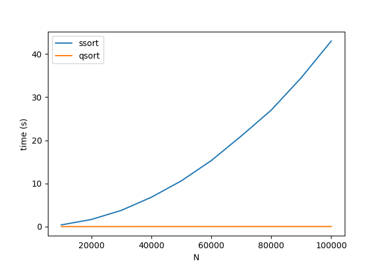
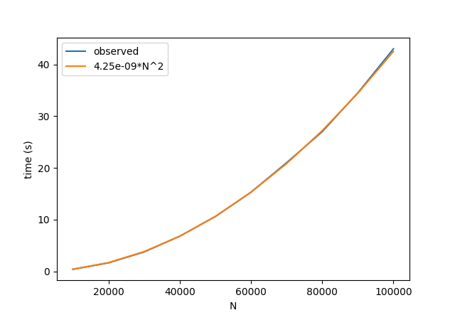

CSCI 3907 Assignment #2
AI Policy for this assigment: As nearly all of the work in this assignment will be running timing tests and plotting your results, feel free to use whatever online resources you like to help you assemble and plot your results.For this assignment you will be comparing various ways of speeding up the sorting programs we worked on eariler in the course.
Part I: Exploring Big-O with the time command
As (I hope!) you remember from your Data Structures course, selection sort is O(n2), whereas quicksort is O(nlog2n). For this exercise we're going to investigatge these theoretical claims, applying my preferred criterion for whether a given discipline is a true science; i.e., how closely does the theory match the data?For timing experiments like this, the two tricks are (1) finding a large enough value of n that the program takes a nontrivial amount of time to run (at least one second or so), but not so much time that you're not sure that it's ever going to finish; and (2) running enough trials at each value of n so that you see a pattern emerging, but not so many trials that you're wasting time seeing the same result over and over. For this sorting-algorithm comparison, I found that values of n between 10,000 (twenty thousand) and 100,000 (one hundred thousand) did the trick, and that five trials of each condition sufficed to reveal meaningful patterns. You don't have to record the values for every trial; just make sure that you see a typical value that doesn't vary too much, and save it in a spreadsheet or other document.
Once you've recorded your ten timing values for selection sort and quicksort, make a nice plot comparing them. Here's what I got for my experiment:

As you can see, quicksort is so much faster than selection sort that we can't even see a pattern for quicksort for these values of n ; i.e., the cost of quickosrt is effectively zero for such small datasets! Before experimenting with larger values of n for quicksort, however, let's see how well we can fit the selection sort data to its theoretical O(n2) time complexity. As you may recall, saying that the cost of an algorithm is O(n2) means that (above some trivial value of N), the algorithm runs in time no more than kN2, where k is a constant depending on our hardware, implementation, etc. To validate this definition, play around with some (really tiny) values of k to see how good a fit you can get for the observed behavior of selection sort. Here's what I got on my computer:

Not bad, eh? To finish up this set of experiments, let's do the same thing for quicksort: find a big enough interval of values for N that you can get a nice set of time measurements, then try to find a value of k that gives you the best fit to the theoretical O(nlog2n). I found that values of n between ten million and a hundred million gave me a nice spread, which I was again able to fit pretty well to the theory. Make your own plot for this experiment, and include the plot in your writeup.
Part II: Speedup with compiler options
Moving ahead with quicksort, let's focus to comparing execution speeds under different compilation flags. For this experiment, repeat your quicksort trials for the ten large values of N, comparing your original timing results from the previous experiment with the results you get under the following compiler settings (note that the O in -O1 and -O2 is the letter O, not the number zero).-g -pg (debugging and profiling)
-O1 (basic optimization)
-O2 (recommended standard)
Part III: Cost-free abstraction with the STL
Traditionally, programmers concerned with maximizing performance were encouraged to specialize their code for different datatypes, because a general-purpose (abstract) algorithm for sorting any kind of data was typically less efficient than an algorithm that sorted only, e.g. strings or integers. Cost-free abstraction refers to the idea that we can use the same functions (sort, search, et al) for any datatype, without incurring an undue performance hit.To explore this issue in C++, we're going to compare our integer quicksort algorithm against the built-in STL sorting function std::sort().